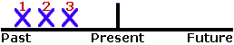

Simple Past
{kind=link}
FORM
[VERB+ed] or irregular verbs
Examples:
- You called Debbie.
- Did you call Debbie?
- You did not call Debbie.
USE 1 Completed Action in the Past
Use the Simple Past to express the idea that an action started and finished at a specific time in the past. Sometimes, the speaker may not actually mention the specific time, but they do have one specific time in mind.
Examples:
- I saw a movie yesterday.
- I didn't see a play yesterday.
- Last year, I traveled to Japan.
- Last year, I didn't travel to Korea.
- Did you have dinner last night?
- She washed her car.
- He didn't wash his car.
USE 2 A Series of Completed Actions

We use the Simple Past to list a series of completed actions in the past. These actions happen 1st, 2nd, 3rd, 4th, and so on.
Examples:
- I finished work, walked to the beach, and found a nice place to swim.
- He arrived from the airport at 8:00, checked into the hotel at 9:00, and met the others at 10:00.
- Did you add flour, pour in the milk, and then add the eggs?
USE 3 Duration in Past
The Simple Past can be used with a duration which starts and stops in the past. A duration is a longer action often indicated by expressions such as: for two years, for five minutes, all day, all year, etc.
Examples:
- I lived in Brazil for two years.
- Shauna studied Japanese for five years.
- They sat at the beach all day.
- They did not stay at the party the entire time.
- We talked on the phone for thirty minutes.
- A: How long did you wait for them?
B: We waited for one hour.
USE 4 Habits in the Past

The Simple Past can also be used to describe a habit which stopped in the past. It can have the same meaning as "used to." To make it clear that we are talking about a habit, we often add expressions such as: always, often, usually, never, when I was a child, when I was younger, etc.
Examples:
- I studied French when I was a child.
- He played the violin.
- He didn't play the piano.
- Did you play a musical instrument when you were a kid?
- She worked at the movie theater after school.
- They never went to school, they always skipped class.
USE 5 Past Facts or Generalizations

The Simple Past can also be used to describe past facts or generalizations which are no longer true. As in USE 4 above, this use of the Simple Past is quite similar to the expression "used to."
Examples:
- She was shy as a child, but now she is very outgoing.
- He didn't like tomatoes before.
- Did you live in Texas when you were a kid?
- People paid much more to make cell phone calls in the past.
IMPORTANT When-Clauses Happen First
Clauses are groups of words which have meaning but are often not complete sentences. Some clauses begin with the word "when" such as "when I dropped my pen..." or "when class began..." These clauses are called when-clauses, and they are very important. The examples below contain when-clauses.
Examples:
- When I paid her one dollar, she answered my question.
- She answered my question when I paid her one dollar.
When-clauses are important because they always happen first when both clauses are in the Simple Past. Both of the examples above mean the same thing: first, I paid her one dollar, and then, she answered my question. It is not important whether "when I paid her one dollar" is at the beginning of the sentence or at the end of the sentence. However, the example below has a different meaning. First, she answered my question, and then, I paid her one dollar.
Example:
- I paid her one dollar when she answered my question.
ADVERB PLACEMENT
The examples below show the placement for grammar adverbs such as: always, only, never, ever, still, just, etc.
Examples:
- You just called Debbie.
- Did you just call Debbie?
ACTIVE / PASSIVE
Examples:
- Tom repaired the car. Active
- The car was repaired by Tom. Passive
More About Active / Passive Forms
EXERCISES AND RELATED TOPICS
- Verb Tense Exercise 3 Simple Past and Past Continuous
- Verb Tense Exercise 4 Simple Past and Past Continuous
- Verb Tense Exercise 5 Simple Past and Present Perfect
- Verb Tense Exercise 6 Simple Past and Present Perfect
- Verb Tense Exercise 11 Simple Past and Past Perfect
- Verb Tense Exercise 12 Simple Past, Present Perfect, and Past Perfect
- Verb Tense Exercise 15 Tenses with durations
- Verb Tense Exercise 16 Present and Past Tenses with Non-Continuous Verbs
- Verb Tense Exercise 17 Present and Past Tense Review
- Verb Tense Practice Test Cumulative Verb Tense Review
- Verb Tense Final Test Cumulative Verb Tense Review